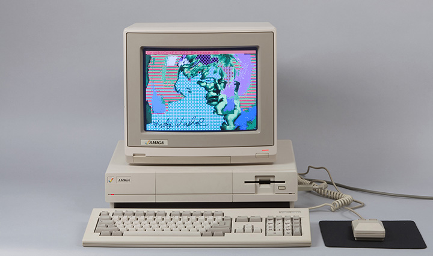

Freelance Web Developer

I’m an Art Historian turned Web Developer thanks to UPenn's Coding Bootcamp. I've become a full-stack Dev and I actively capitalize on my entire range of skills with front-end and back-end technology. My background in the Arts explains my eye for design and attention to detail, but I've always had an attraction to logic and problem solving, which brought me into the tech world. In between getting my Bachelor's of Art History & Criticism from Temple University and recieving my certification in Web Development, I have gathered experience in e-commerce, event coordination, retail management, hospitality, fundraising, and project management for websites.